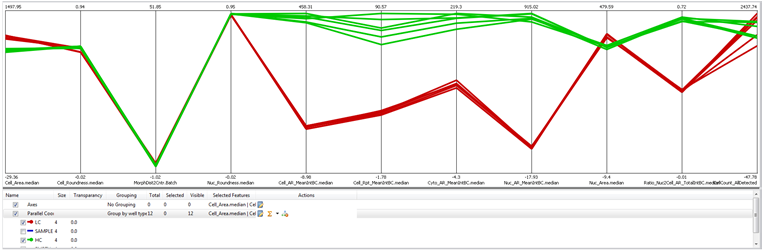

The Parallel Coordinates Plot is a common way of visualizing high-dimensional geometry and analyzing multivariate data. You can select multiple features on the x axis; each feature will add a column to the plot.
This plot can be used to see the relation between different cells over a series of features.

To this chart, you can only add more parallel coordinates layers. You can group them differently or add a different aggregation to them.